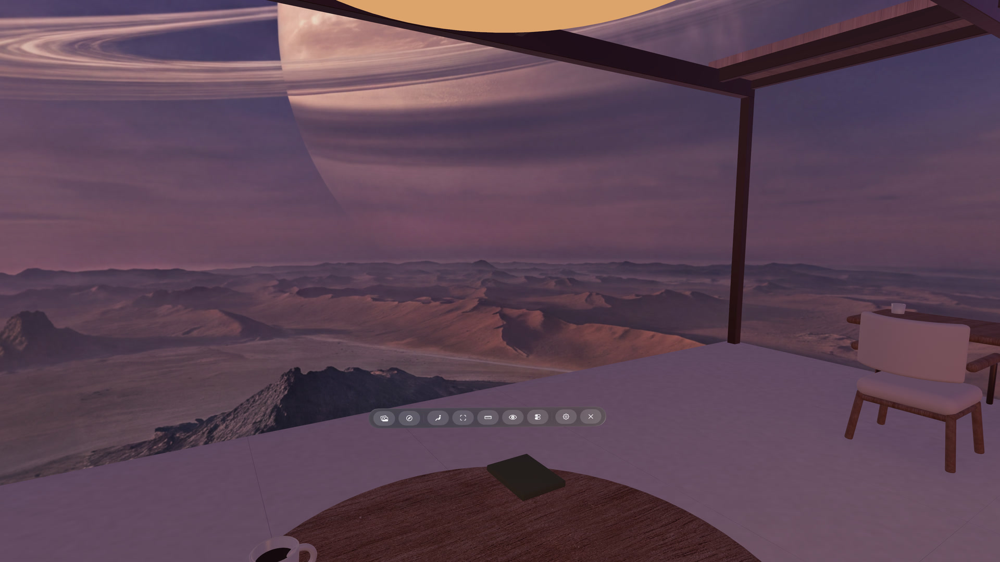

Learn Locus
Pick what you want to do.
Start with a working Place, make it comfortable, or bring in scenery and architecture of your own. Each tutorial tells you what you need before you begin.

Set up your first PlaceChoose a View and Room, then learn the main pages and Locus bar. Apply a panorama from the webTry a 360° image for the session, or save it permanently as a View.
Apply a panorama from the webTry a 360° image for the session, or save it permanently as a View.
Start
Use Locus comfortably
Set up your first PlacePair a View and Room, understand the main pages, and learn every button in the Locus bar.
Customize your PlaceTurn the View, balance the sky and Room lighting, and save the result you want.
Apply a panorama from the webTry a 360° image for this session, or save it permanently as a View.
Make
Bring your own world
Make your own ViewStart with one 2:1 panorama, then learn direction, seam, lighting, and View ZIP options.
Make your own RoomBuild the smallest working Room, then add seats, surfaces, lights, and rendering roles.
Publish a skybox websiteUse GitHub Pages to make your panoramas open as full images in Locus Browser.
Special setups
Use Locus in a different position or workspace
Bring in your Mac screenEnable Apple's developer setting, connect Mac Virtual Display, then enter Locus.
Use Locus while lying downTilt the Room and View together, then move your windows where they feel comfortable.
Try Room animationsUse Cloud Fan Pavilion to explore ambient motion, speed, and replay intervals.
Reference
Go deeper when you need the details
Custom View and Room formatsSupported imports, flat ZIP layouts, appearance fields, provenance, packing, and validation.
Room integration guideSeats, openings, tabletop mappings, lighting, materials, rendering roles, and device checks.
Package format and downloadsGet the schemas, examples, packer, validator, and model audit used by Locus creators.
Asset rights and creditsUnderstand the rights for Locus examples and what to record when you publish your own work.
Quick answers
Not sure which guide you need?
The FAQ keeps short answers and troubleshooting in one place. Search the whole site at any time with Command-K.
Browse the FAQ